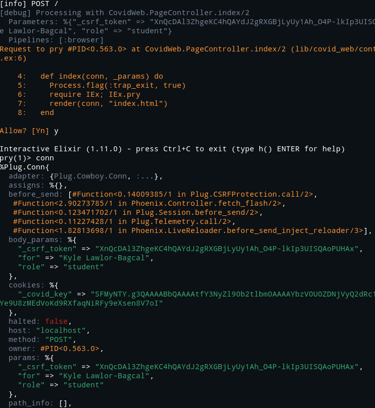

Once you've started up the Phoenix application via the quickstart guide, you can add in the ability to debug the application interactively using IEx.pry. There is one prerequisite step you need to do. You have to add the :iex "application" into your mix.exs file, i.e.:
def application do
[
mod: {Hello.Application, []},
extra_applications: [:logger, :runtime_tools, :iex]
]
end
Here's a nice post that talks about what this extra_applications configuration is all about. I'm new to Elixir but my understanding is that the :iex dependency is an application that needs to be started in your "supervision tree". Once it's started you can make use of it to debug your code. It's what will be responsible for giving you interactive terminal sessions.
So the :iex application is now a part of the Phoenix applications supervision tree (I think..) and now we can start making use of interactive debugging sessions. So how to do that? Well just add a IEx.pry into your code somewhere, i.e. within lib/hello_web/controllers/page_controller.ex:
defmodule HelloWeb.PageController do
use HelloWeb, :controller
def index(conn, _params) do
require IEx; IEx.pry
render(conn, "index.html")
end
end
This will stop the demo application right before it's about to render the main landing page HTML file for the tutorial. And it will allow you to interactively take a look at conn and params. Here's a screenshot of some of the output you will get by when you have this breakpoint in place:

Notice how the first line includes info about the incoming request. We can see that the request I was debugging was a POST request. It also tells you precisely with controller the request was handled by. Additionally it shows you the parameters that came along with the request. It also show's you all of the Plug's that are set to run before the response will be sent.
The :iex application asks you for permission to "pry" the given request. Assuming you say y to that, you'll get dropped into a iex shell. From there you can start interacting with any and all objects in the area of code your located at.
This is just the beginning of using the interactive debugger in iex. There is much more that you can do with this. For example you could set a break within this interactive terminal session, if you expect another function to be causing a problem. For more on that, I direct you to the official docs. I'll write more as I get into it, as always I'm only just scratching the surface.
Also here's some prior art, albeit outdated, but still likely useful.